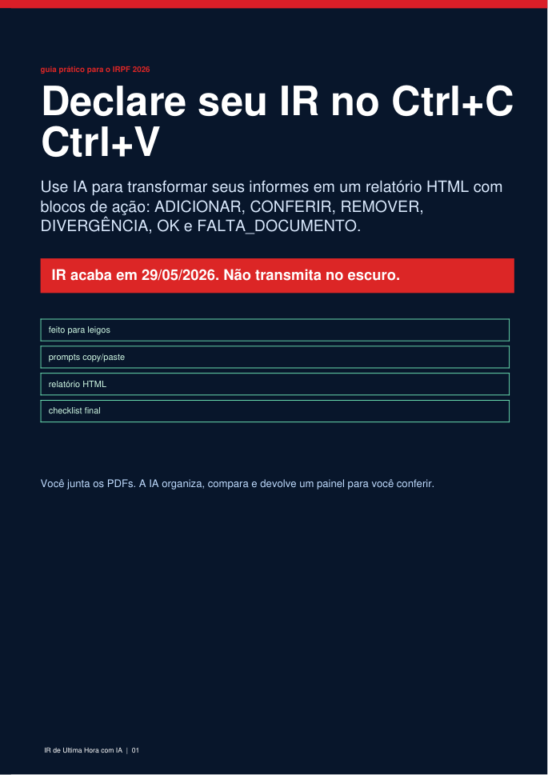
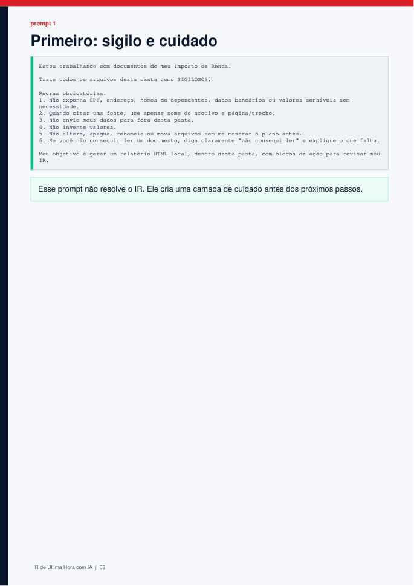
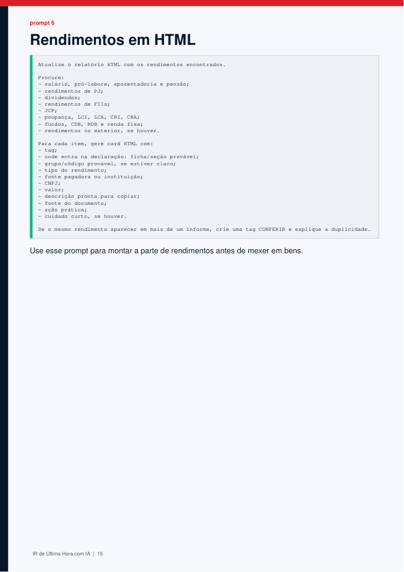

Junte a bagunça
Banco, corretora, B3, previdência, saúde, educação, CLT, PJ e DARF em uma pasta.
Prazo oficial IRPF 2026: 29/05, 23h59
Transforme PDFs de banco, B3, corretora, CLT, PJ, previdência, saúde e DARF em um checklist de revisão com IA antes de transmitir.
Proposta de valor
A pré-preenchida ajuda, mas não confere tudo por você. O guia te dá um roteiro para organizar documentos, pedir uma varredura para a IA e chegar em uma lista de pendências antes de clicar em transmitir.
Banco, corretora, B3, previdência, saúde, educação, CLT, PJ e DARF em uma pasta.
Use blocos prontos para pedir inventário dos PDFs, comparação e relatório de revisão.
Cards com ADICIONAR, CONFERIR, DIVERGÊNCIA, REMOVER e FALTA_DOCUMENTO.
O método
Em vez de abrir vinte PDFs e tentar lembrar onde cada coisa entra, você segue um processo: localizar informes, rodar os prompts, abrir o relatório e atacar cada card.
Quero aplicar hoje por R$ 47Ficha provável, fonte do dado, valor e próximo passo para comparar com a pré-preenchida.
Ticker, CNPJ, tipo de rendimento e alerta para decisão humana antes de copiar.
O card destaca onde o documento diverge do que já está na declaração.
Antes de transmitir, procure o documento ou leve o ponto para um contador.
O que vem no PDF



Urgência real
A página não precisa inventar pânico. A urgência já existe: quanto mais perto do prazo, menos tempo sobra para procurar informe, conferir B3, revisar DARF e corrigir pendência.
Compre se
Não compre se
Guia por R$ 47
Compre o guia, abra o PDF e use os prompts para transformar seus documentos em checklist de revisão antes do prazo.
Comprar agora por R$ 47 Compra processada pela Kiwify. Produto digital educativo em PDF.Este guia é educativo. Não é produto oficial da Receita Federal. Não substitui contador, advogado ou consultor tributário. Não promete redução de imposto, restituição, ausência de multa ou ausência de malha fina. A responsabilidade pela declaração é do contribuinte.
FAQ
O botão leva direto para o checkout da Kiwify: https://pay.kiwify.com.br/RQASrq5.
Não. A proposta é copiar prompts, organizar arquivos e abrir um relatório de revisão.
Não. Use como checklist de apoio. Casos complexos devem ser revisados com contador.
O fluxo cobre B3, corretoras, ativos, rendimentos, JCP, FIIs e DARF como pontos de revisão.